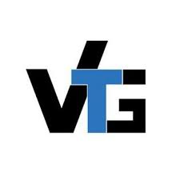
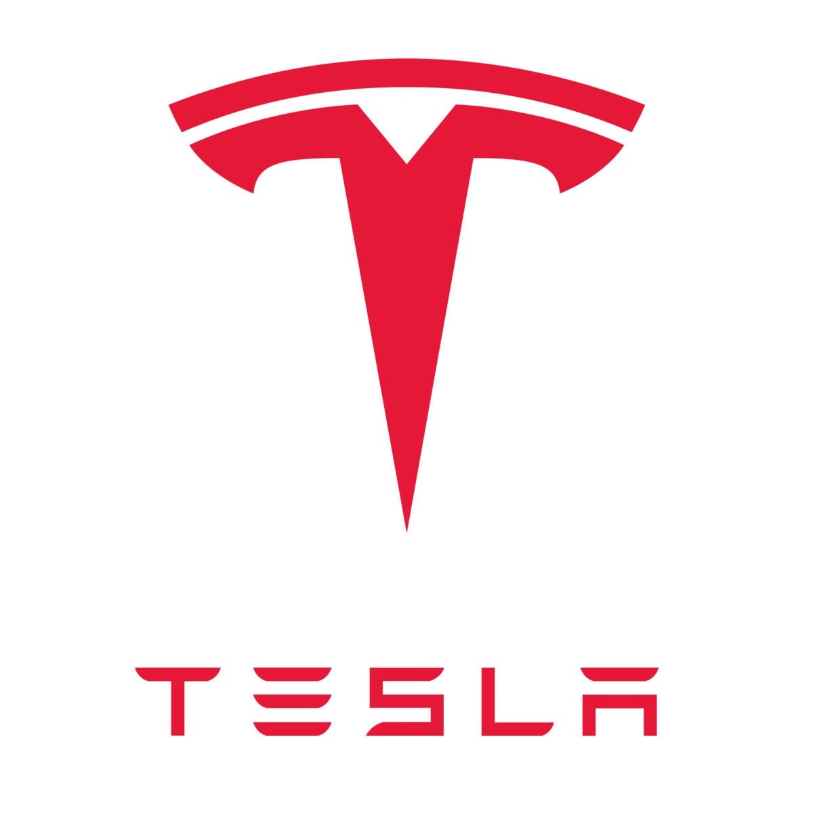
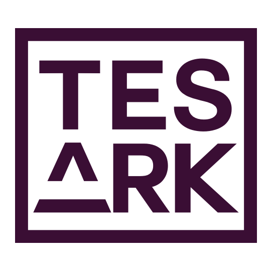

About Me
As a Software Engineer at Meta Platforms, I specialize in the architecture and optimization of distributed systems, databases, and large-scale AI infrastructure. My work is centered on resolving the critical trade-offs between planetary-scale data delivery and system reliability, with a specific focus on the rigorous demands of modern artificial intelligence systems.
My professional experience at Meta, complemented by a Master of Science in Computer Science (4.0 GPA) from Arizona State University, provides me with a unique synthesis of practical engineering expertise and a strong theoretical foundation. Through my work on some of the world's largest systems, I have identified a recurring challenge: critical failures often arise not from algorithmic deficiencies, but from a lack of formal methods in system design, where data provenance and lineage are not treated as first-class citizens. This insight drives my research and engineering philosophy.
Primary Research Interests
- Trustworthy AI Data Infrastructure: Engineering robust systems where data lineage and formal provenance are integral to the architecture, ensuring verifiability and reliability for AI/ML workloads.
- Next-Generation Data Engines: Designing and implementing novel data processing engines that bridge the performance gap between conventional batch processing and real-time streaming, tailored for the unique demands of AI applications.
- Intelligent Resource Management for AI Data Centers: Developing formalized methodologies for resource allocation and scheduling to optimize for cost, energy efficiency, and performance in large-scale AI training and inference environments.
Research Experience
Formal AI Data Provenance Platform
2023 - 2023Meta Platforms
- Architected a GraphSQL-based provenance layer securing lineage for 2,300+ AI data pipelines.
- Reduced production debugging time by 60% by introducing formally verified dependency proofs.
- Rolled out integrity guardrails that cut data regressions by 35% across training workflows.
Graph-Powered Public Health Analytics
2020 - 2021Madras Institute of Technology
- Built graph-based contact tracing heuristics that increased exposure detection recall by 22%.
- Delivered CNN models classifying daily movement patterns with 91% F1 accuracy on urban datasets.
- Optimized handset sampling strategy, extending device battery life by 18% during pilots.
Autonomous Multi-UAV Coordination
2019 - 2020Madras Institute of Technology
- Designed O(n) cooperative collision-avoidance planner enabling 40+ UAVs to coordinate in real time.
- Developed a ROS-based swarm simulator that accelerated field test readiness by 3×.
- Formalized airspace safety constraints, eliminating boundary violations in 500+ simulated sorties.
Professional Experience
Software Engineer
Meta Platforms
New York City, NY

Software Engineer
Zenfra, Virtual Tech Gurus
Irving, TX

Software Engineer Intern
Tesla Inc
Fremont, CA
Software Engineer Intern
Meta Platforms
Menlo Park, CA
Software Engineer Intern
Zoho Corporation
Chennai, India

Software Engineer Intern
Tesark Technologies
Chennai, India
Academic Journey
Master of Science in Computer Science
Arizona State University
Tempe, AZ
GPA: 4.0/4.0 (Gold Medalist)
- Research focus: Distributed Systems, AI Infrastructure, Data Management
- Teaching Assistant for CSE 573: Semantic Web Mining
Bachelor of Engineering in Computer Science
Madras Institute of Technology, Anna University
Chennai, India
- Research in UAV collision avoidance and contact tracing systems
- Teaching Assistant for Data Structures and Algorithms I & II
Teaching Experience
Teaching Assistant - CSE 573: Semantic Web Mining
Arizona State University
Spring 2022
Assisted in course delivery, grading, and student mentoring for graduate-level semantic web mining course.
Instructor - Fundamentals of Coding & Algorithms Cohort
Arizona State University
Fall 2022
Mentored students from first-generation and career-transitioning backgrounds through weekday sessions, providing targeted support in Python and data structures to deepen their understanding of foundational academic principles.
Teaching Assistant - Data Structures and Algorithms I & II
Madras Institute of Technology, Anna University
2019 - 2020
Led programming labs and tutorials for undergraduate students, covering fundamental algorithms and data structures.
Technical Skills
Programming
Python, Hack, PHP, C++, Java, MySQL, Oracle Database, PostgreSQL, MSSQL, HTML, CSS, Angular JS, React JS, ETL
Tools & Technologies
Keras, PyTorch, Tensorflow, Pandas, NumPy, SciPy, OpenCV, Scikit-Learn, Matplotlib, Apache Spark, Hive, Airflow, Presto, Xcode, Tableau, Jenkins, AWS S3, D3 JS, Docker